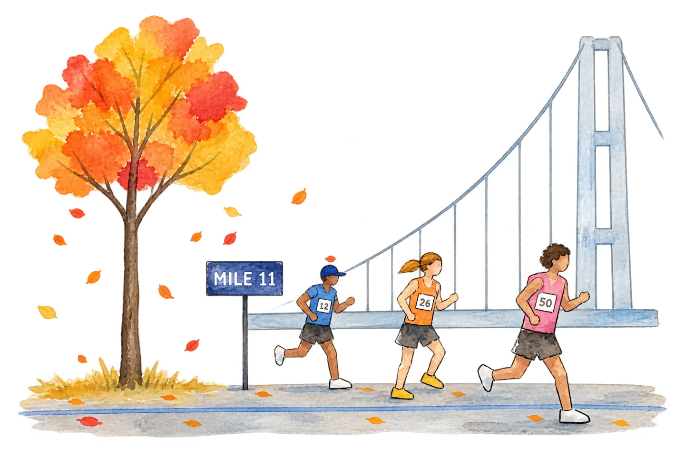

NYC Marathon
Hi neighbor. Tell this page where you're watching. It works out when the race reaches you, which train gets you there, and, if you're following someone, when they'll arrive.
Sunday, November 1 · 50 years of the five-borough course · Clocks fall back overnight, so every time here is Eastern Standard Time.

–
Copy your coordinates from a maps app and paste them here. In Google Maps, long-press your blue dot to drop a pin, then copy the numbers it shows. In Apple Maps, drop a pin where you are and copy its coordinates.
Add their wave and goal time to see when they'll reach your spot.
Times assume an even pace from the wave's start gun. Runners in back corrals can cross the start mat several minutes later, so arrive at your spot a little early. For live splits, follow them in the TCS New York City Marathon app.
Tap the course to set your spot
When the race comes through
No spectators at the start or on the Verrazzano-Narrows Bridge, no chairs on the course, and no access north of the grandstands in Central Park. Cell service gets unreliable on First Avenue and near the finish, so agree on a meeting spot ahead of time.
Sunday, Nov 1 · EST
Elite finish times are rough estimates. Most listings put the professional women's start at 8:35; one lists 8:40. NYRR says start times can change, so check the app in the morning.
Sunny with light winds. Low 50s at the start, warming into the low 60s by midday and afternoon.
The first course change in 15 years, in the Bronx between miles 20 and 21. After the Willis Avenue Bridge, runners go up Alexander Ave to E 141st St, then Third Ave and E 138th St to the Madison Avenue Bridge. Morris Ave, E 140th St and Rider Ave are no longer on the route. The 6 train to 3 Av–138 St puts you right on it.
The sweep follows the last wave at a 16-minute-mile pace and roads reopen behind it. Official finish times are recorded until 10:00 PM.
Compiled Oct 31 from NYRR race information as reported by FOX 5 NY, ABC7, ESPN, Marathon Handbook and The Running Channel. Check the official app for last-minute changes.